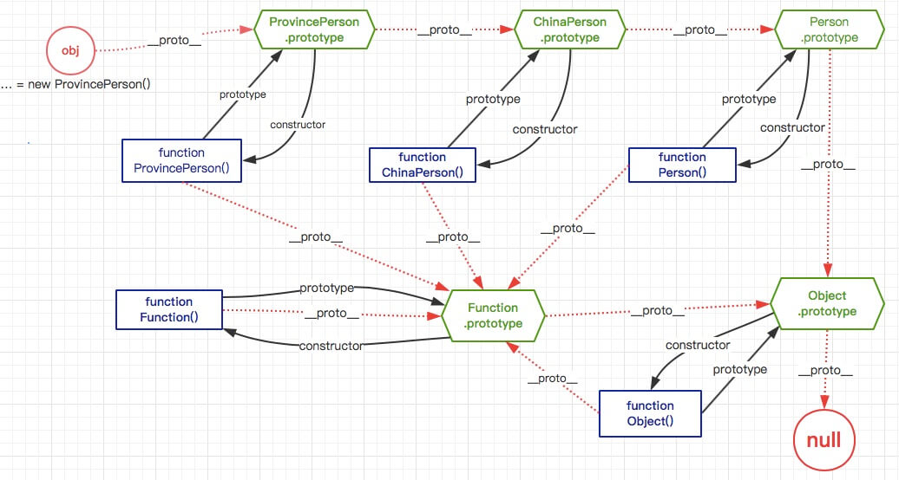
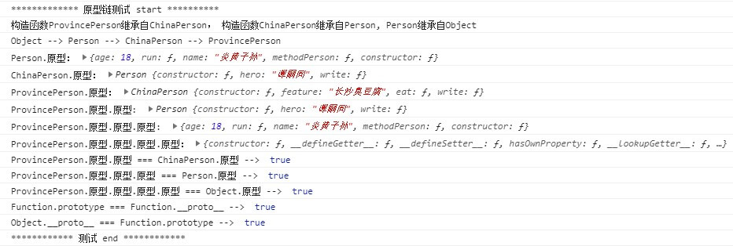

原文出处:本文由博客园博主TDX提供。
原文连接:https://www.cnblogs.com/tandaxia/p/10966885.html
原文连接:https://www.cnblogs.com/tandaxia/p/10966885.html
把JS的原型和原型链重新梳理了一遍，然后动手绘制了一张流程图，原型和原型链的秘密就藏在这张图上。绘制流程图的好处就是在绘制的过程中，既检验自己对这个知识点的掌握状况，同时在绘制过程中会对这个知识点印象更深刻，理解更透彻，建议每个感兴趣的小伙都来身体力行一次。
为了更清晰的了解原型链的走向，先创建三个构造函数，建立多重继承关系，分别为Person、ChinaPerson、ProvincePerson，它们之间的继承关系为：ProvincePerson 继承了 ChinaPerson, ChinaPerson继承了Person。接下来，我们
先贴上代码，每个子构造函数会在继承父级的基础上，分别在构造函数里面和原型里面，自定义添加自己的属性和方法；另外在Person原型上写上和构造函数里面同名的属性和方法，用来验证同名方法名时，构造函数里面的方法和原型上的方法哪个优先执行；在ProvincePerson上会重写从父级继承的方法，侧面粗略展示下面向对象的多态特性。


/**
* JavaScript的多级继承和多态、原型和原型链的体现
* */
//1.1 构造函数：人(Person)
function Person(name){
this.name = name ? name : "人类";
this.methodPerson = function(){
console.log("Person构造函数里面的方法methodPerson-->我的标签：" + this.name);
}
console.log("********Person 构造函数 初始化********");
}
//给Person的原型上添加属性和方法
Person.prototype.age = 18;
Person.prototype.run = function(){
console.log("Person原型方法run-->name: " + this.name + ", age: " + this.age + ", 欢快的run");
}
//问题：如果构造函数的原型里面的属性和方法，和构造函数的属性和方法同名，实例对象调用属性和方法时执行哪个？
//Person原型的name和Person构造函数的name，实例对象调用哪个？
Person.prototype.name = "炎黄子孙";
Person.prototype.methodPerson = function(){
console.log("Person原型的methodPerson方法-->标签：" + this.name + ", age: " + this.age);
}
//1.2 构造函数：中国人(ChinaPerson)，继承于Person
function ChinaPerson(name, skin){
Person.call(this, name); //调用父级Person构造函数
this.skin = skin ? skin : "黄色";
this.methodChinaPerson = function(){
console.log("ChinaPerson构造函数里面的方法methodChinaPerson-->肤色：" + this.skin + ", 标签: " + this.name);
}
console.log("********ChinaPerson 构造函数 初始化********");
}
//设置ChinaPerson原型指向Person原型，相当于ChinaPerson继承Person
ChinaPerson.prototype = Object.create(Person.prototype);
//设置新原型的构造函数指向自己
ChinaPerson.prototype.constructor = ChinaPerson;
//给ChinaPerson的原型自定义添加属性和方法
ChinaPerson.prototype.hero = "谭嗣同";
ChinaPerson.prototype.write = function(){
console.log("ChinaPerson原型里面的方法write-->我自横刀向天笑，去留肝胆两昆仑！is who? " + this.hero + ", 标签: " + this.name + ", skin: " + this.skin);
}
//1.3 构造函数：ProvincePerson, 继承于ChinaPerson
function ProvincePerson(name, skin, count){
ChinaPerson.call(this, name, skin); //调用父级ChinaPerson构造函数
this.count = count ? count : 8000;
this.methodProvincePerson = function(){
console.log("ProvincePerson构造函数里面的方法methodProvincePerson-->数量：" + this.count + "万, 肤色："+ this.skin + ", 标签：" + this.name);
}
//重写从父级继承下来的方法methodChinaPerson
this.methodChinaPerson = function(){
console.log("ProvincePerson构造函数里面重写父级方法methodChinaPerson....");
}
console.log("********ProvincePerson 构造函数 初始化********")
}
//设置ProvincePerson原型指向ChinaPerson原型，相当于构造函数ProvincePerson继承于ChinaPerson
ProvincePerson.prototype = Object.create(ChinaPerson.prototype);
//设置新原型的构造函数指向自己
ProvincePerson.prototype.constructor = ProvincePerson;
//给ProvincePerson的原型上自定义添加属性和方法
ProvincePerson.prototype.feature = "长沙臭豆腐";
ProvincePerson.prototype.eat = function(){
console.log("ProvincePerson原型里面的方法eat-->标签：" + this.name + ", 地方小吃是：" + this.feature + ", hero: " + this.hero + ", skin: " + this.skin);
}
//重写从父级原型继承下来的方法
ProvincePerson.prototype.write = function(){
console.log("ProvincePerson原型里面重写从父级原型继承的write方法-->。。。。^_^");
}
结合以上代码，绘制构造函数原型链关系，如下图：

对上图进行说明，和原型链知识点进行归纳：
- ProvincePerson、ChinaPerson、Person三个是自定义构造函数，Function、Object两个是系统构造函数；
- 原型链方向（寻找父级方向）为：ProvincePerson --> ChinaPerson --> Person --> Object --> null ； Function --> Object --> null ；
- 上图中obj是构造函数ProvincePerson的实例对象；矩形代表构造函数，六边形代表构造函数的原型对象，红色虚线代表实例对象通过其私有原型属性__proto__寻找父级原型走向；
- prototype是构造函数的属性，__proto__是构造函数的实例对象的属性；
- 实例对象的__proto__属性指向该对象的构造函数的prototype属性，即 实例对象.__proto__ = 构造函数.prototype ;
- __proto__是隐式原型，平常不建议直接使用，通常用Object.getPrototypeOf(对象)来获取实例对象的原型；
- 构造函数的prototype 和 实例对象的__proto__ 都是对象
- 实例对象的__proto__属性指向该对象的构造函数的prototype属性，即 实例对象.__proto__ = 构造函数.prototype ;
- 敲重点了：
- 函数调用时，使用new关键字，叫构造函数，比如var obj = new ProvincePerson() 。这时ProvincePerson叫构造函数，是一个类模板；
- 当函数不使用new关键字，直接调用时，就是一个普通函数，比如ProvincePerson()、Object()、Function() 等等，这样使用它们都叫普通函数；
- 所有的普通函数都是构造函数Function的实例对象，比如Object、Function作为普通函数调用时它们都是Function的实例对象。
- 这就是为什么函数既有prototype属性，也有__proto__属性，因为它们都有双重身份：
- 第一重身份是它们有可能会使用new关键字，这时它们是构造函数，有prototype属性；
- 第二重身份是它们不使用new关键字，直接调用，这时候它们都是构造函数Function的实例对象，所以这时候它们有__proto__属性。
- Function作为一个特殊的存在，特殊之处在于 Function.prototype = Function.__proto__ ，即它作为构造函数的原型(prototype) 和 它作为普通函数的实例对象的原型(__proto__) 指向同一个对象；
- 构造函数的原型的constructor属性指向构造函数，实例对象的constructor也指向构造函数，即 构造函数.prototype.constructor = 构造函数 = 该构造函数的实例对象.constructor
- 一个构造函数继承自父级构造函数，会拥有父级所有对外的，包括构造函数的属性和方方法，和父级原型的属性和方法；
- 子级构造函数可以对继承的属性和方法进行重写；如果构造函数里面的方法或属性，和它的原型上的方法或属性同名，则调用时优先构造函数里面的方法或属性；
- 所有的对象或构造函数通过原型链，追本溯源，最后的老祖宗都是Object。即所有的构造函数都是Object的子级或间接子级。Object的原型的原型是null，到这里就是终极大结局了！
大概知识点就是这些，在上面代码的基础上，再来一些测试代码，验证一下。先上一份测试原型链关系的代码：
//测试一下
var pro1 = Person.prototype, pro2 = ChinaPerson.prototype, pro3 = ProvincePerson.prototype;
//ProvincePerson原型的原型 === ChinaPerson的原型
var pro3_china = Object.getPrototypeOf(pro3);
//ProvincePerson原型的原型的原型 === Person的原型
var pro3_person = Object.getPrototypeOf(pro3_china);
//ProvincePerson原型的原型的原型的原型 === Object的原型
var pro3_object = Object.getPrototypeOf(pro3_person);
//Function和Object作为普通函数时是构造函数Function的实例对象，获取这两个实例对象的原型
var pro_function = Object.getPrototypeOf(Function), pro_object = Object.getPrototypeOf(Object);
console.log("************* 原型链测试 start **********")
console.log("构造函数ProvincePerson继承自ChinaPerson， 构造函数ChinaPerson继承自Person, Person继承自Object")
console.log("Object --> Person --> ChinaPerson --> ProvincePerson")
console.log("Person.原型：", pro1);
console.log("ChinaPerson.原型：", pro2);
console.log("ProvincePerson.原型：", pro3);
console.log("ProvincePerson.原型.原型: ", pro3_china);
console.log("ProvincePerson.原型.原型.原型: ", pro3_person);
console.log("ProvincePerson.原型.原型.原型.原型：", pro3_object);
console.log("ProvincePerson.原型.原型 === ChinaPerson.原型 --> ", pro3_china === pro2);
console.log("ProvincePerson.原型.原型.原型 === Person.原型 --> ", pro3_person === pro1);
console.log("ProvincePerson.原型.原型.原型.原型 === Object.原型 --> ", pro3_object === Object.prototype);
console.log("Function.prototype === Function.__proto__ --> ", Function.prototype === pro_function);
console.log("Object.__proto__ === Function.prototype --> ", pro_object === Function.prototype);
console.log("************ 测试 end ************\n")
/*
测试结果：
************* 原型链测试 start **********
构造函数ProvincePerson继承自ChinaPerson， 构造函数ChinaPerson继承自Person, Person继承自Object
Object --> Person --> ChinaPerson --> ProvincePerson
Person.原型： {age: 18, run: ƒ, name: "炎黄子孙", methodPerson: ƒ, constructor: ƒ}
ChinaPerson.原型： Person {constructor: ƒ, hero: "谭嗣同", write: ƒ}
ProvincePerson.原型： ChinaPerson {constructor: ƒ, feature: "长沙臭豆腐", eat: ƒ, write: ƒ}
ProvincePerson.原型.原型: Person {constructor: ƒ, hero: "谭嗣同", write: ƒ}
ProvincePerson.原型.原型.原型: {age: 18, run: ƒ, name: "炎黄子孙", methodPerson: ƒ, constructor: ƒ}
ProvincePerson.原型.原型.原型.原型： {constructor: ƒ, __defineGetter__: ƒ, __defineSetter__: ƒ, hasOwnProperty: ƒ, __lookupGetter__: ƒ, …}
ProvincePerson.原型.原型 === ChinaPerson.原型 --> true
ProvincePerson.原型.原型.原型 === Person.原型 --> true
ProvincePerson.原型.原型.原型.原型 === Object.原型 --> true
Function.prototype === Function.__proto__ --> true
Object.__proto__ === Function.prototype --> true
************ 测试 end ************
*/测试结果截图：

再来一份对于多级继承和重写展示的测试代码：
//第二波测试，测试构造函数的继承 和 多态（重写从父级继承下来的属性或方法）
console.log("\n************* 继承和重写 start ************");
console.log(">>>>>>准备创建一个Person实例对象>>>>>");
var per = new Person("王大锤");
per.methodPerson();
per.run();
console.log("*****Person实例对象测试结论：构造函数和原型有同名属性或方法，实例对象优先调用构造函数的属性或方法*****\n");
console.log("\n>>>>>准备创建一个ChinaPerson实例对象，ChinaPerson继承了Person >>>>>");
var chObj = new ChinaPerson("中国人", "黄色");
chObj.methodChinaPerson();
chObj.write();
chObj.methodPerson();
chObj.run();
console.log("*****ChinaPerson实例对象测试结论：继承自父类Person， 拥有父类所有对外的构造函数里面和原型里面的属性和方法\n");
console.log("\n>>>>>准备创建一个ProvincePerson实例对象，ProvincePerson继承了ChinaPerson>>>>>");
var proObj = new ProvincePerson("湖南人", "黄色", 888);
proObj.methodProvincePerson();
proObj.eat();
proObj.methodChinaPerson();
proObj.write();
proObj.methodPerson();
proObj.run();
console.log("*****ProvincePerson实例对象测试结论：拥有父级和父级的父级的所有对外的，包括构造函数里面和原型里面的属性和方法；另外也可以对父级属性或方法进行重写");
console.log("************ 测试 end ************\n");
/*
测试结果打印日志：
************* 继承和重写 start ************
>>>>>>准备创建一个Person实例对象>>>>>
********Person 构造函数 初始化********
Person构造函数里面的方法methodPerson-->我的标签：王大锤
Person原型方法run-->name: 王大锤, age: 18, 欢快的run
*****Person实例对象测试结论：构造函数和原型有同名属性或方法，实例对象优先调用构造函数的属性或方法*****
>>>>>准备创建一个ChinaPerson实例对象，ChinaPerson继承了Person >>>>>
********Person 构造函数 初始化********
********ChinaPerson 构造函数 初始化********
ChinaPerson构造函数里面的方法methodChinaPerson-->肤色：黄色, 标签: 中国人
ChinaPerson原型里面的方法write-->我自横刀向天笑，去留肝胆两昆仑！is who? 谭嗣同, 标签: 中国人, skin: 黄色
Person构造函数里面的方法methodPerson-->我的标签：中国人
Person原型方法run-->name: 中国人, age: 18, 欢快的run
*****ChinaPerson实例对象测试结论：继承自父类Person， 拥有父类所有对外的构造函数里面和原型里面的属性和方法
>>>>>准备创建一个ProvincePerson实例对象，ProvincePerson继承了ChinaPerson>>>>>
********Person 构造函数 初始化********
********ChinaPerson 构造函数 初始化********
********ProvincePerson 构造函数 初始化********
ProvincePerson构造函数里面的方法methodProvincePerson-->数量：888万, 肤色：黄色, 标签：湖南人
ProvincePerson原型里面的方法eat-->标签：湖南人, 地方小吃是：长沙臭豆腐, hero: 谭嗣同, skin: 黄色
ProvincePerson构造函数里面重写父级方法methodChinaPerson....
ProvincePerson原型里面重写从父级原型继承的write方法-->。。。。^_^
Person构造函数里面的方法methodPerson-->我的标签：湖南人
Person原型方法run-->name: 湖南人, age: 18, 欢快的run
*****ProvincePerson实例对象测试结论：拥有父级和父级的父级的所有对外的，包括构造函数里面和原型里面的属性和方法；另外也可以对父级属性或方法进行重写
************ 测试 end ************
*/